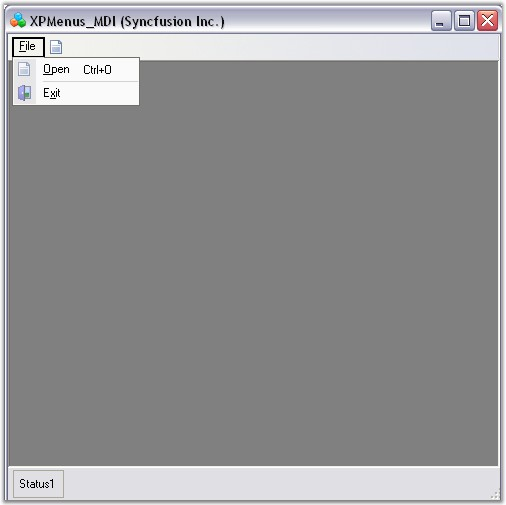
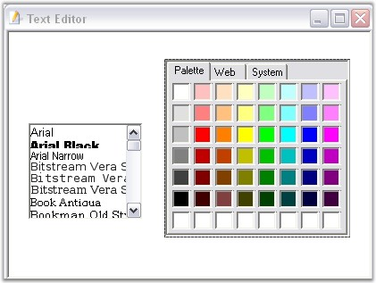
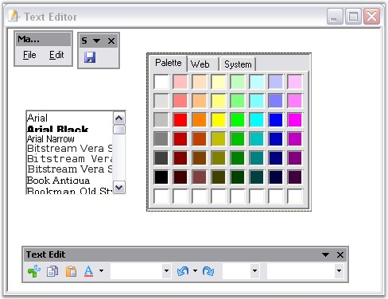

This section illustrates how to create MDI Child forms using the ChildFrameBarManager.
Follow the steps below to create MDI parent form and MDI child form.
Creating MDI ParentForm
1. Set up an MDIParent form by setting Form.IsMdiContainer property to true.
2. Add bar items, 'Open' and 'Exit', under File menu bar using MainFrameBarManager. Refer to Creating Menus.

Figure 822: MDIMainForm
3. Create a new form named TextEditor, with the controls FontListBox and ColorUIControl. We will consider this form as the MDIChildForm.

Figure 823: MDIChildForm with Fontlist and ColorUIControl
4. Drag-and-Drop ChildFrameBarManager to the child form and add necessary Bar items. Adding bar items using ChildFrameBarManager is similar to MainFrameBarManager.

Figure 824: MDIChildForm with Fontlist, ColorUIControl and XP Toolbars
5. Now merge the toolbars and menus of the child form with the Main form using RegisterMDIChildType function as follows.
|
[C#]
this.MainFrameBarManager1.RegisterMdiChildTypes(new Type[]{typeof(TextEditorForm)}); |
|
[VB.NET]
Me.MainFrameBarManager1.RegisterMdiChildTypes(New Type(){GetType(TextEditorForm)}) |
A sample demonstrating the MDI feature is available in the below sample installation location.
..\My Documents\Syncfusion\EssentialStudio\Version Number\Windows\Tools.Windows\Samples\2.0\Menus Package\XPMenusMDI
 MDI Merging
MDI Merging